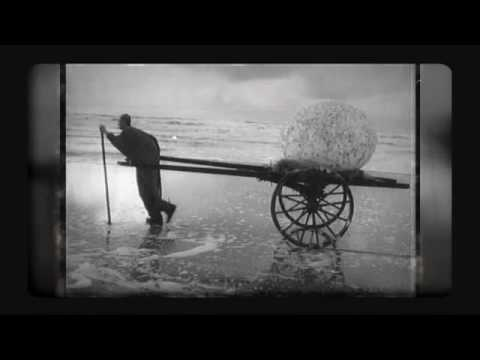

Welcome to 86- lemn
Derevo – Mobila de bucatarie la comanda
2020.09.22 02:45contact@derevo.ro 0727 734 751 8:00 am - 6:00 pm Prima pagină Proiecte Servicii Contact
Mobilier de bucatarie Calitate si personalitate Ia legatura cu noi Hai la showroom Nu lasa nimic la intamplare Bucataria face parte din camin Vreau un pret repede Suna acum
De ce noi?
Mobila de bucatarie are nevoie de o viziune cu experienta
Serviciile noastre de consultanta, masuratori si montaj sunt gratuite pentru clientii nostri.
Dupa intalnirea cu noi vei avea un proiect de bucatarie complet gratuit.
Garantie extinsa pentru mobilierul de bucatarie la comanda
Ce facem noi?
Oferim serviciul complet. Incepand de la consultanta specifica pentru mobilierul de bucatarie la comanda, masuratori exacte asigurate gratuit, proiectare 3D gratuita, fabricarea pieselor de mobilier la comanda, transportarea mobilierului si asigurarea garantiei pentru o perioada extinsa
Mobilier de bucatarie la comanda
Dupa o vizita in showroom veti intelege de ce trebuie sa lucrati cu noi pentru mobila de bucatarie la comanda.
Consultanta de specialitate
Punem intotdeauna la dispozitie consultanta profesionala in amenajarea spatiului interior.
Daca ai un proiect trimite-l pe email: contact@derevo.ro
Design gratuit
Oferim consultanta in alegerea materialelor, culorilor si design gratuit clientilor nostri.
Montaj gratuit
Montajul este gratuit pentru Bucuresti si imprejurimi
Proiectare
Oferim servicii de proiectare pentru a optimizara spatiul astfel incat sa se potriveasca cat mai bine cu necesitatile tale
Oprimizarea spatiilor
Impreuna stabilim proiectul astfel incat sa fie 100% optimizat dupa nevoie tale
Pentru a contacta un profesionist suna acum
0735425055
Vezi cateva proiecte propuse pentru tine
Calitate ridicata, servicii profesionale si simt de raspundere
Despre noi
Producem mobilier la comanda de peste 10 ani. Oferim servicii de consultanta, masuratori si montaj gratuite Proiectare gratuita pentru clientii nostri Materiale si finisaje de cea mai inalta calitate Garantie 2 ani pentru mobilierul la comandaInformatii de contact
Address :Str. Institutul medico militar 22, Bucuresti
Call Us :0735 425 055
Email :contact@Derevo.ro
Utile
ANPCPolitica de confidentialitate
Termeni si conditii
Asa ajungi la noi
[/vc_column] [/vc_column] Blogul folosește cookie-uri pentru o funcționare mai rapidă. Apăsați Sunt de acord pentru cea mai bună experiență. Setari cookie Sunt de acord Politica GDPR ClosePrivacy Overview
This website uses cookies to improve your experience while you navigate through the website. Out of these cookies, the cookies that are categorized as necessary are stored on your browser as they are essential for the working of basic functionalities of the website. We also use third-party cookies that help us analyze and understand how you use this website. These cookies will be stored in your browser only with your consent. You also have the option to opt-out of these cookies. But opting out of some of these cookies may have an effect on your browsing experience. Necesare Întotdeauna activateNecessary cookies are absolutely essential for the website to function properly. This category only includes cookies that ensures basic functionalities and security features of the website. These cookies do not store any personal information.
Non-necesare Non-necesareAny cookies that may not be particularly necessary for the website to function and is used specifically to collect user personal data via analytics, ads, other embedded contents are termed as non-necessary cookies. It is mandatory to procure user consent prior to running these cookies on your website.
Close Acasa Proiecte Servicii Contact